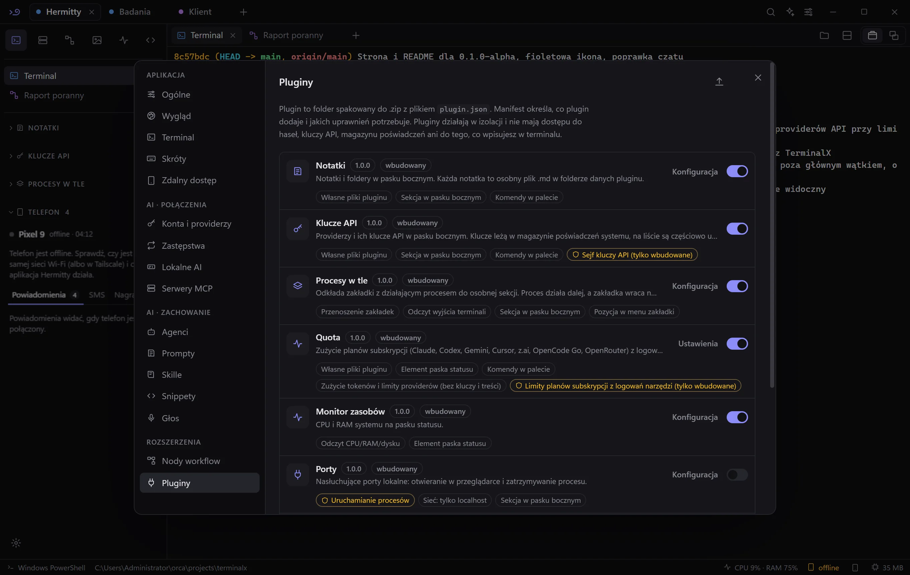

Terminale, agenci AI i workflow w jednym lekkim oknie.
PowerShell, CMD, WSL i SSH w workspace'ach z zakładkami. Każdy workspace ma agenta AI, który czyta terminale i wykonuje komendy za Twoją zgodą.

Wszystko, czego potrzebujesz przy pracy w terminalu
Jedno okno zamiast kilku aplikacji. Klucze API leżą w Menedżerze poświadczeń Windows, a pluginy działają w izolacji.
Workspace'y i zakładki
Zakładki przeciągasz myszą i dzielisz na panele. W trybie „Okna” każda zakładka jest swobodnym oknem. Zamknięte da się przywrócić przez 20 sekund.
Agent i podagenci
Agent prowadzi cały workspace i zleca zadania podagentom w zakładkach. Wybierasz uprawnienia, możesz dodawać załączniki, a każda rozmowa trafia do historii.
Workflow z nodów
Terminal, AI, grafika, wideo, pliki i sieć. Workflow uruchamia harmonogram, push do gita albo zmiana pliku. Agent zbuduje go z opisu.
Lokalne AI
Obrazy i wideo na Twojej karcie graficznej przez ComfyUI, instalowane jednym kliknięciem. Modele Ollamy dzielą z nim jedną kolejkę GPU.
Głos
Dyktujesz wiadomość agentowi, a odpowiedzi możesz słuchać. Czytać może Windows offline albo głos providera.
Konta i providerzy
Anthropic, OpenAI, Google, OpenRouter, Ollama i inni. Każdy provider może mieć kilka kluczy, które przełączają się przy limicie. Limity planów subskrypcji widać na paskach.
SSH i SFTP
Vault hostów z grupami i tagami. Logowanie kluczem albo przez agenta SSH, przekierowania portów i dwupanelowy SFTP.
Pluginy
Notatki, Quota, Klucze API, Procesy w tle, Telefon i inne. Każdy działa w sandboxie z jawnymi uprawnieniami.
Zobacz, jak to wygląda



Telefon przy komputerze, bez sięgania do kieszeni
Mała aplikacja łączy telefon z Hermitty. Wszystko obsługujesz z paska bocznego na komputerze, także gdy telefon jest zablokowany.
- Powiadomienia. Widzisz je na komputerze, odpowiadasz w komunikatorach i zamykasz je jednym kliknięciem.
- SMS-y. Rozmowy z nazwami kontaktów, czytanie i wysyłanie z klawiatury.
- Zdalny dyktafon. Nagrywanie włączasz z komputera skrótem Ctrl+Alt+R. Nagranie trafia na komputer, gdzie odsłuchasz je albo zamienisz na tekst.
- Znajdź telefon i bateria. Dzwonek na pełnej głośności. Stan baterii widać na pasku statusu.
- Prywatność. Połączenie jest szyfrowane AES-256-GCM, a kody logowania i BLIK zamieniają się w kropki, zanim opuszczą telefon.


Każdy plugin do pobrania osobno
Wszystkie pluginy są już w aplikacji. Paczka .zip przyda się do ponownej instalacji: Ustawienia → Pluginy → Importuj.
Procesy w tle
Zakładkę z działającym procesem odkładasz do paska bocznego, a proces działa dalej.
.zipPluginy oznaczone jako „wbudowany” korzystają z uprawnień zarezerwowanych dla aplikacji: sejfu kluczy, logowań narzędzi i telefonu. Działają tylko w wersji dostarczonej z Hermitty, a import pliku .zip je odrzuci. Własne pluginy opisuje dokumentacja.
Pobierz Hermitty 0.1.0-alpha
Windows 10 i 11. Zainstalowana aplikacja sama pobiera kolejne wersje.
Instalator nie ma jeszcze certyfikatu, więc Windows SmartScreen pokaże ostrzeżenie. Kliknij „Więcej informacji”, a potem „Uruchom mimo to”.
Telefon: otwórz pobrany plik APK i zezwól na instalację. W Hermitty włącz plugin Telefon (Ustawienia → Pluginy), kliknij + w jego sekcji i wpisz kod w aplikacji.
Wszystkie pliki i opis zmian są w wydaniu na GitHubie.